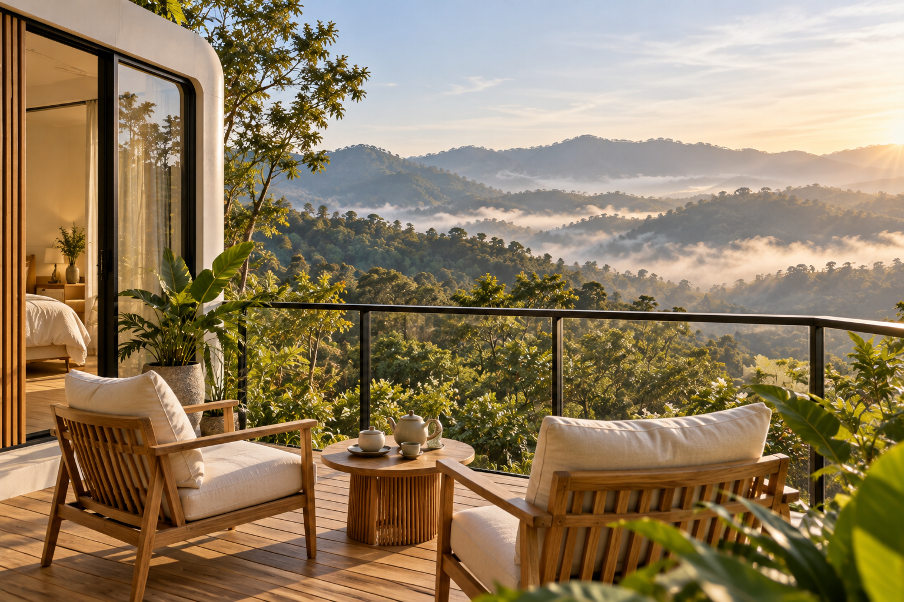
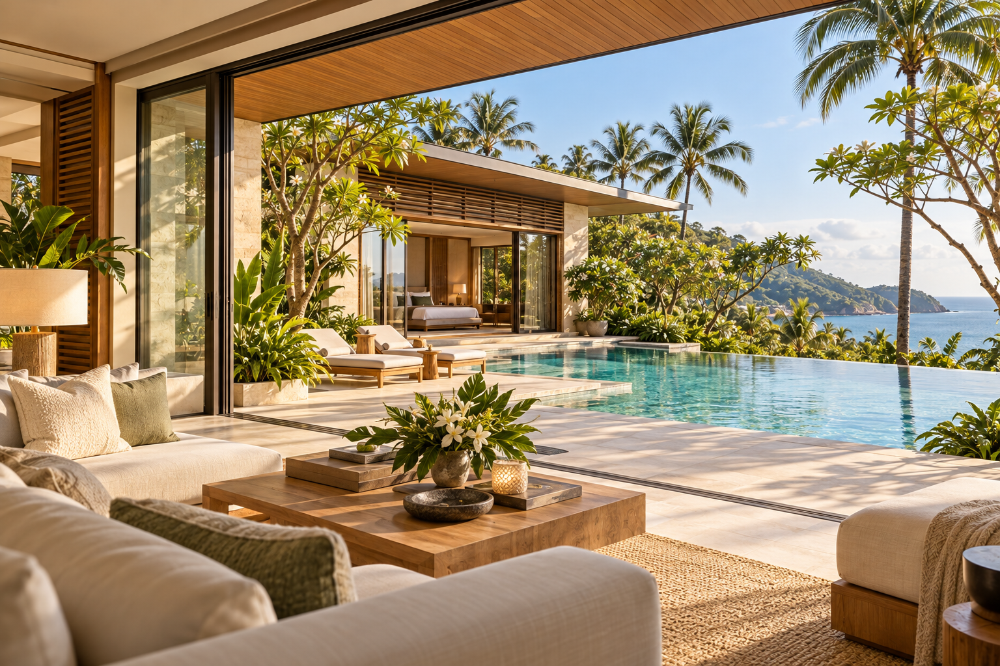
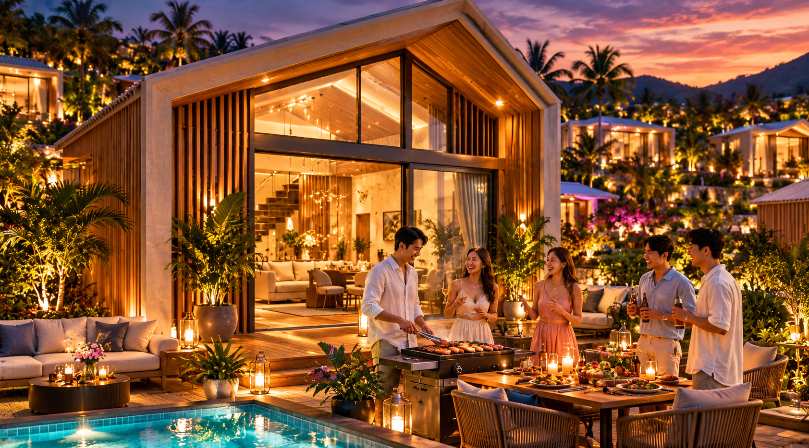
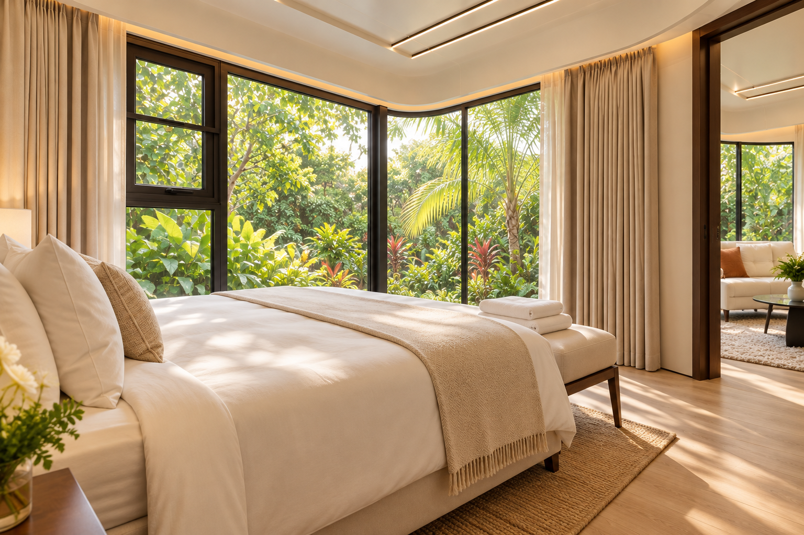
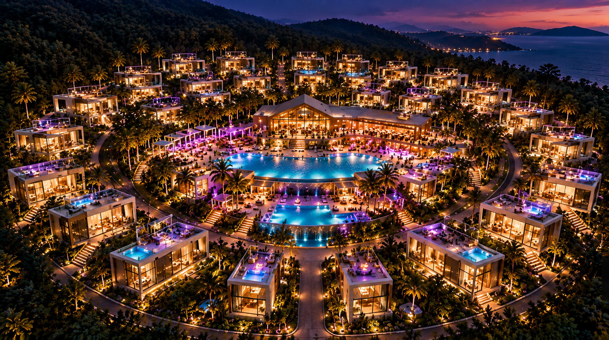
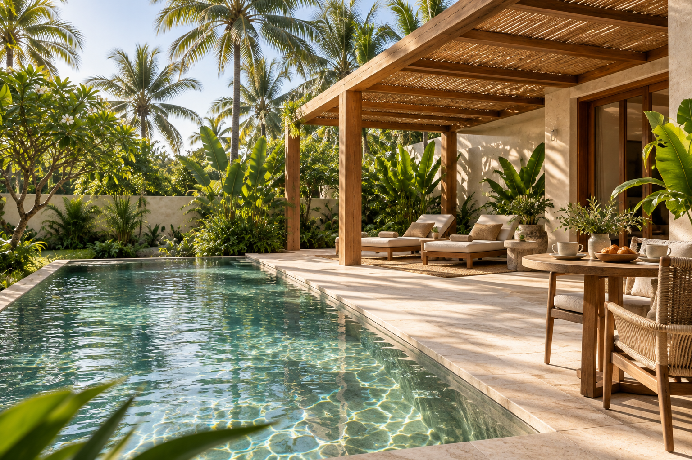
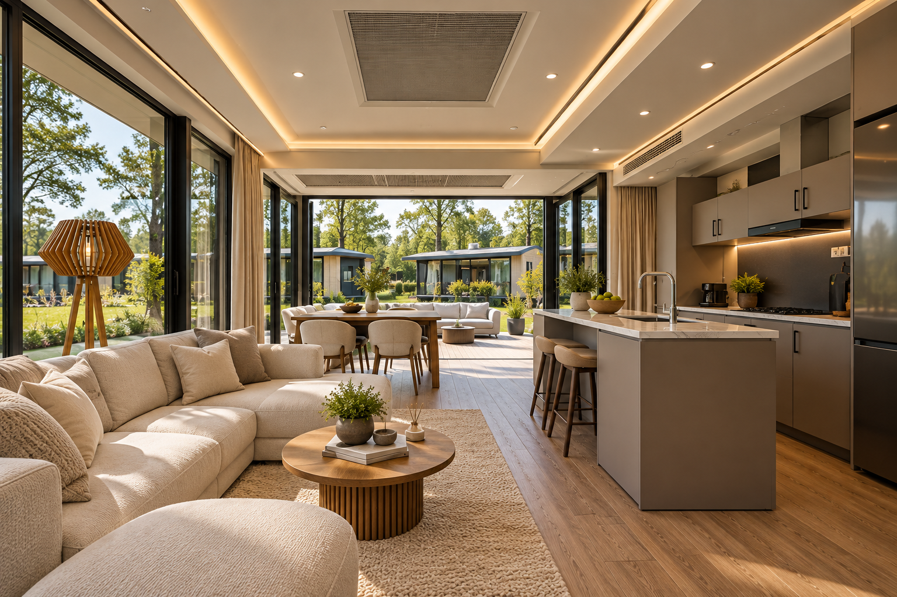

MyLodge
MyLodgeFIND YOUR DESTINATION
내 해외 별장, 어디에 있으면 좋을까?
- 푸켓 · 바다와 전용 풀을 즐기는 휴양
- 치앙마이 · 자연 가까이 머무는 생활
- 방콕 · 만남과 일상이 이어지는 도시
THREE PLACES IN THAILAND
태국의 세 가지 라이프
태국
 MyLodge
MyLodge푸켓 · 프라이빗 휴양
수영장 옆에서 책을 읽고, 따뜻한 바람을 즐기는 오후 우리만의 속도로 쉬어 가는 풀빌라 라이프를 그려보세요
- 이런 휴식에
- 해변 · 풀빌라 · 휴양
치앙마이 · 자연 속 체류
초록을 바라보며 보내는 느긋한 아침 일과 휴식 사이의 균형을 찾고, 조금 더 오래 머무는 일상을 그려보세요
- 이런 휴식에
- 자연 · 장기 체류 · 여유
방콕 · 편리한 도시 생활
카페와 맛집을 발견하고, 새로운 문화를 만나는 하루 도시를 즐긴 뒤 돌아올 편안한 콘도 생활을 그려보세요
- 이런 휴식에
- 도심 · 콘도 · 생활
MyLodge
MyLodge MyLodge
MyLodge MyLodge
MyLodge
MyLodgeMyLodge MyLodge
MyLodgeMORE THAN A HOLIDAY
“다음엔 내 해외 별장에서 만나”
- 친구에게 건네는 특별한 초대
- 함께 식사하고 이야기를 나누는 시간
- 다시 만날 이유가 생기는 나의 공간
MOMENTS TO KEEP
그곳에서 보내게 될 하루
 MyLodge
MyLodge오늘의 메뉴는 함께 만드는 추억
좋아하는 음식을 준비하고 테이블에 둘러앉는 시간 평범한 저녁도 별장에서는 특별해집니다
특별한 날을 함께 남기는 공간
둘만의 저녁과 느긋한 아침, 기념일의 순간을 별장에서 이어가 보세요
오랜만이라는 말 대신, 자주 만나자는 약속
넓은 거실에 모여 못다 한 이야기를 나눠보세요 다음 만남을 기다리게 하는 공간을 꿈꿉니다

MyLodge
MyLodge MyLodge
MyLodge MyLodge
MyLodge MyLodgeMyLodge
MyLodgeMyLodgePRIVATE MANSION / CONNECTIONS
공간을 넘어, 만나는 사람도 달라지도록
- 취향이 맞는 사람과 나누는 새로운 이야기
- 취미와 활동을 함께 즐기는 교류
- 나만의 시간과 함께하는 시간의 균형
FIND YOUR PEOPLE
나와 닮은 취향을 골라보세요
 MyLodge
MyLodge함께 자라는 가족의 추억
아이와 보내는 느긋한 아침, 온 가족이 모이는 저녁 세대가 함께 즐길 별장 생활을 그려보세요
둘만의 리듬으로 보내는 시간
함께 요리하고 산책하며 바쁜 일상에서 놓쳤던 대화를 이어가세요
좋아하는 일로 가까워지는 사이
취미와 활동이 만남으로 이어지는 휴가 새로운 사람과 함께할 즐거움을 발견해 보세요
좋은 대화가 새로운 가능성으로
편안한 라운지에서 나누는 생각과 경험 일과 만남이 자연스럽게 이어지는 시간을 제안합니다
나를 위한 여백을 채우는 하루
아무것도 서두르지 않는 아침 조용한 공간에서 몸과 마음의 속도를 되찾아 보세요
관심 취향을 살펴보는 화면입니다 커뮤니티 운영과 배정은 상품별로 안내합니다

MyLodge MyLodge
MyLodge
MyLodge.png) MyLodge
MyLodge MyLodge
MyLodgeEXPLORE YOUR FUTURE STAY
사진에서 마음이 움직였다면, 공간을 더 자세히
- 사진으로 확인하는 공간의 분위기
- 연결된 모델의 1층과 2층을 살펴보는 3D
- 실제로 머무는 모습을 그려보는 체류 계획
MYLODGE → HANZCITY
별장 라이프에서 더 넓은 일상으로
- 지금 시작
- HanzCity 회원가입·로그인상단 회원가입 버튼으로 연결
- 준비 중
- 더 다양한 라이프스타일 서비스새로운 서비스와 계정 연계는 순차 안내
MyLodge를 출발점으로 HanzCity의 더 넓은 생활 서비스를 준비합니다 상품 신청·계약과 서비스별 이용은 별도 안내에 따릅니다
EXPLORE THE SPACE
마음에 드는 공간부터 둘러보세요
MyLodge함께 머물고 싶은 거실과 주방
식탁에서 시작해 거실로 이어지는 대화 우리만의 시간을 채우는 공간을 둘러보세요
문을 열기 전부터 시작되는 설렘
밝은 외관과 탁 트인 창으로 만나는 별장의 첫인상 나의 휴식에 어울리는 집을 그려보세요
실내의 편안함을 바깥까지
커피 한 잔과 함께하는 아침, 바람을 느끼는 저녁 테라스에서 휴식의 폭을 넓혀보세요
나에게 맞는 공간의 크기
디럭스 10평과 프레스티지 20평, 생활 방식에 맞춰 공간을 선택해 보세요

MyLodge